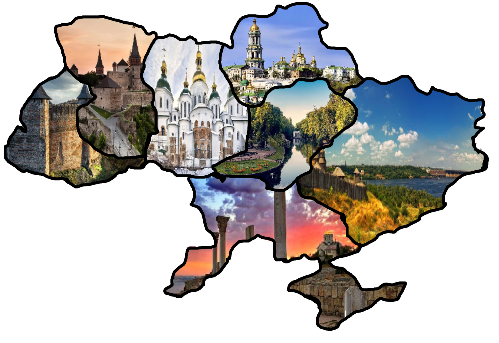

Космічне представлення 7 чудес України
Головна
Чудеса
Карта
Фотоколаж
Анімація
Карта з чудесами України

Оберіть одне з чудес України, і ви побачите його розташування на інтерактивній карті.
Софіївка (Умань)
Києво-Печерська лавра
Хортиця (Запоріжжя)
Кам’янець-Подільська фортеця
Херсонес Таврійський (Севастополь)
Хотинська фортеця
Софійський собор (Київ)